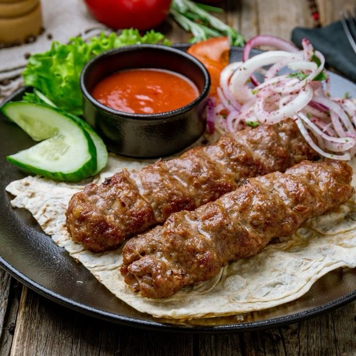
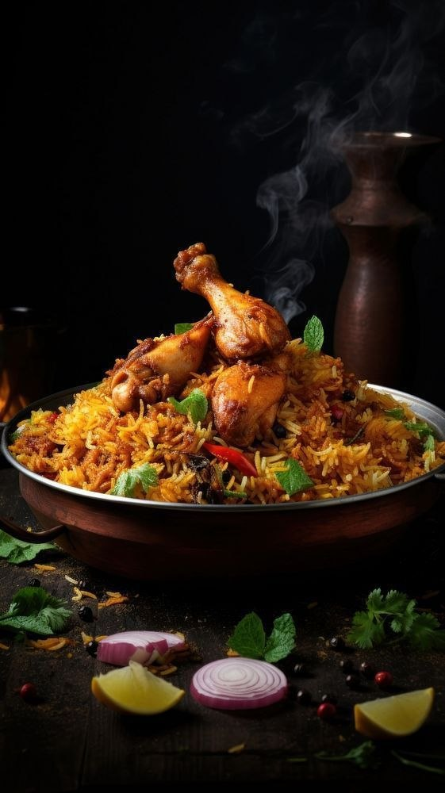
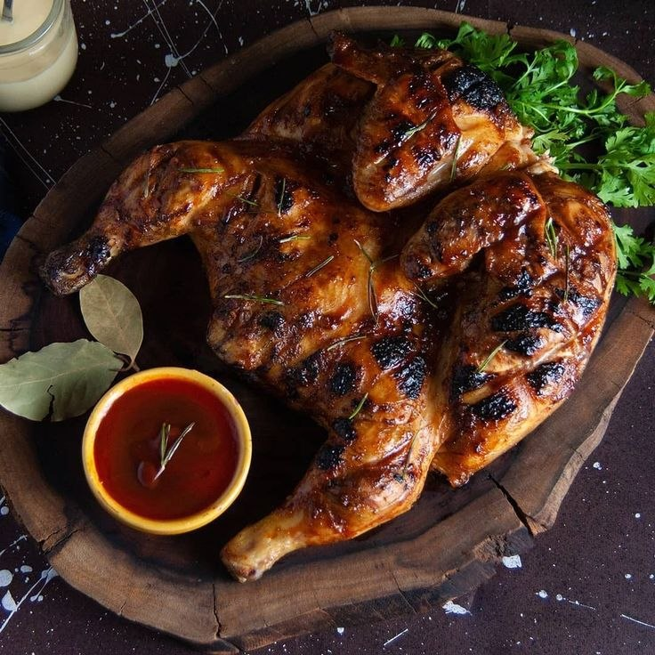

الاكلات الرئيسية
| الطبق | المكونات | السعر | صورة |
|---|---|---|---|
| كباب | لحم مثروم | 12,000 دينار عراقي |  |
| دولمة | رز+خضار+لحم+بهارات | 14,000 دينار عراقي | |
| برياني | دجاج+رز+مكسرات+بهارات | 11,000 دينار عراقي |  |
| دجاج مشوي | دجاج+صلصة | 12,000 دينار عراقي |  |
| قوزي | لحم+رز | 15,000 دينار عراقي | |
| كبة | لحم+جريش+بصل+بهارات | 15,000 دينار عراقي | |
| سمك مسكوف | سمك مشوي | 15,000دينار عراقي |